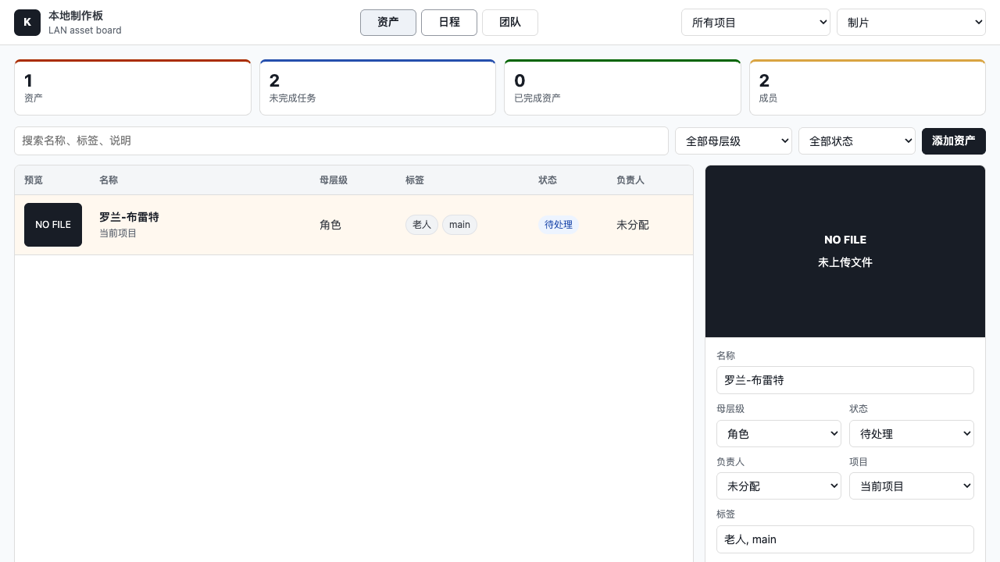
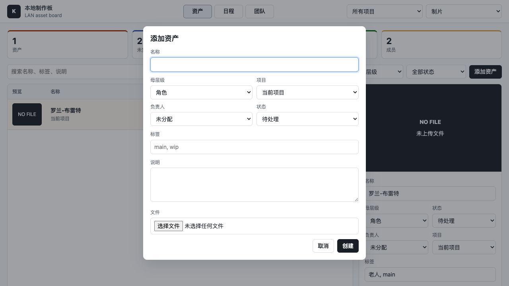
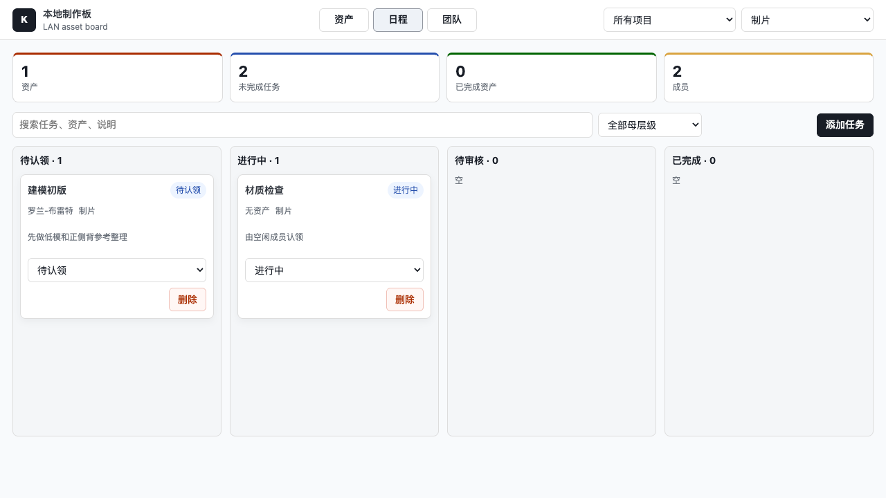
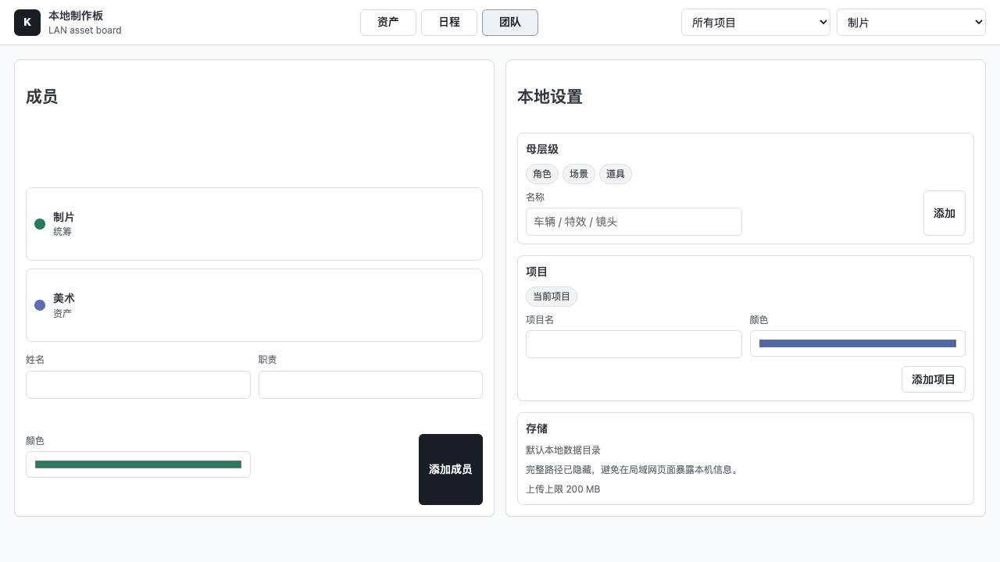

1. 系统简介
Local Kitsu Lite 是面向小型制作团队的本地资产和任务管理工具。它保留 Kitsu 类工具里最常用的资产表、标签检索、负责人和任务看板，但去掉重型制片流程、复杂权限和外部服务依赖。
适合管理角色、场景、道具、参考图、制作任务和小团队每日认领进度。所有元数据写入本地 JSON，上传文件进入本地或 NAS 数据目录。
2. 主要功能
资产库
- 上传图片或参考文件
- 按母层级分类：角色、场景、道具或自定义
- 用标签和搜索快速定位资产
任务日程
- 为资产创建任务
- 按待认领、进行中、待审核、已完成分列
- 成员一键认领任务
本地部署
- 局域网页面访问
- 数据可指向 NAS 挂载目录
- 不依赖云服务或外部数据库
3. 启动和访问
启动服务
在项目根目录运行：
npm start本机访问
打开浏览器访问 http://localhost:4173。
局域网访问
其他机器访问服务器 IP，例如 http://192.168.1.20:4173。
第一次使用建议先进入“团队”页，添加成员、项目和需要的母层级。
4. 资产管理
- 进入“资产”页，使用顶部搜索框按名称、标签或说明筛选。
- 用“全部母层级”和“全部状态”快速缩小范围。
- 点击资产行后，在右侧检查器编辑名称、母层级、状态、负责人、项目、标签和说明。

资产页保留表格密度，右侧用于查看预览和修改元数据。
添加资产
- 点击“添加资产”。
- 填写名称、母层级、项目、负责人、状态和标签。
- 可上传图片或其他参考文件；文件会进入当前数据目录的
uploads/。

标签支持用空格、英文逗号、中文逗号或顿号分隔。
5. 日程和任务认领
- 进入“日程”页查看任务看板。
- 未分配任务会显示“认领”，当前人员点击后自动成为负责人，并进入“进行中”。
- 任务状态可以直接在卡片里的下拉框切换：待认领、进行中、待审核、已完成。

日程页按状态分列，适合小团队每天查看谁在做什么。
6. 团队、项目和母层级
- 进入“团队”页添加成员，成员会出现在负责人和当前人员下拉框中。
- 添加项目后，资产和任务都可以归入对应项目。
- 添加母层级用于定义资产大类，例如角色、场景、道具、车辆、特效。

团队页显示存储状态和上传上限，不展示本机绝对路径。
7. NAS 存储设置
默认数据保存在项目内的 data/。上线给团队使用时，建议把数据目录指向 NAS 挂载路径：
LOCAL_KITSU_DATA_DIR=/Volumes/YourNAS/studio-board npm start目录结构如下：
studio-board/
db.json
uploads/不要把
data/、uploads/ 或截图输出提交到 GitHub；它们是运行数据。